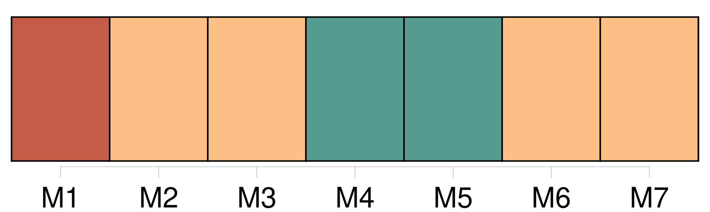
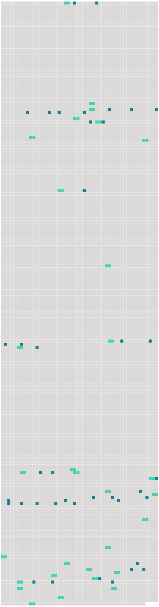

Longueur nb maillons : 69 mentions |
  |
Et pendant les vacances notre mère nous emmenait dans la petite maison qu'elle possédait, tout près de chez [son frère] , [que] nous appelions oncle meunier, et [dont] le moulin tournait sur une jolie rivière descendant à la Loire. [77 phrases] Dans un instant, mon père et ma mère viendront me prendre pour me conduire au moulin de la Haie, chez [oncle meunier] , où je continuerai à vivre étendue, en attendant ma complète guérison. [4 phrases] Lorsque nous arrivons dans la petite gare de la Haie, [oncle meunier] s'élance plutôt qu' [il] ne monte dans notre compartiment. [Il] a un air fâché que je ne [lui] ai jamais vu. Et, sans embrasser [sa] sœur ni tendre la main à [son] beau-frère, [il] me soulève de la banquette et m' [emporte] jusqu'à la voiture longue et basse, dans laquelle je passerai dorénavant toutes mes journées. [3 phrases]
Mes parents marchent de chaque côté de moi, et leur pas, et celui d' [oncle meunier] font à peine plus de bruit sur le gravier que les roues caoutchoutées de ma voiture. [2 phrases] En approchant, je vois bien que [c'] est [son mari] [qu'] elle regarde et non pas nous. [9 phrases] Mon installation finie, mes parents s'en vont au moulin avec tante Rude et [oncle meunier] [3 phrases] Manine est une parente éloignée, devenue orpheline, et recueillie par [oncle meunier] [28 phrases]
La première fois que je revins au moulin avec mon tablier plein d'œufs et que je racontai comment je m'y étais prise pour les avoir, [oncle meunier] rit de mon adresse, et [dit] : [40 phrases]
[Oncle meunier] fait bon visage à la jeune femme, mais tante Rude me demande souvent : [53 phrases] C'est alors de sa part des reproches durs, et parfois sur un ton si élevé qu'ils attirent [oncle meunier] Devant [lui] je laisse couler mes larmes. En devine-t [-il] la cause?? [Il] me parle surtout de [sa] femme en l'excusant : « Tu sais, elle n'est pas méchante, elle est seulement autoritaire. [2 phrases]
»
Je crains de [lui] dire que si on a été trop bon pour tante Rude, en retour elle n'est guère douce aux autres. [81 phrases]
Les béquilles de Mme Lapierre me soutinrent pendant une semaine, puis ce fut une solide canne fabriquée par [oncle meunier] , et que j'abandonnais à toute minute, tant j'avais hâte de me déplacer par mes propres moyens. [2 phrases]
me répétait [oncle meunier]
Et pour moi [il] reprenait ce qu' [il] avait coutume de se dire à [lui -même] d'un ton moqueur : [3 phrases]
[Oncle meunier] [qui] avait tenu à m'accompagner dans ma promenade me dit tranquillement : [8 phrases]
[Oncle meunier] n'alla pas contre ma volonté de départ, [il] me dit seulement : [1 phrases]
[Oncle meunier] ne fut pas embarrassé pour trouver d'autres empêchements à mon départ, mais j'eus réponse à tout.
À la fin comme pour vaincre mon entêtement, [il] me dit : [1 phrases] [Vous] ?? [1 phrases] Ce fut là ma seule réponse, car à toute heure je retrouvais dans [ses] yeux la même tendresse que dans ceux de ma mère ; et le même sourire sur [ses] lèvres plus fortes.
Et comme, pour le moment, j'apercevais dans [son] regard et dans [son] sourire une inquiétude qu' [il] cherchait à dissimuler, je [l'] assurai de mon affection et [lui] promis d'attendre encore. [13 phrases]
[Oncle meunier] ne parut pas trop surpris, et tante Rude qui le paraissait moins encore, offrit de m'aider à nettoyer et mettre en ordre notre propre maison qui était mitoyenne avec celle de Manine. [20 phrases]
J'eus pitié de leur visage consterné, et, l'air enjoué, je répétais ce qu'avait dit [oncle meunier] : [3 phrases]
Ils mirent au lit les jumeaux, las de grand air et de jeux, et après nous avoir tous embrassés très tendrement, ils reprirent le chemin de la gare accompagnés seulement d' [oncle meunier] [8 phrases]
[Oncle meunier] placé entre eux, le visage sévère aussi leur parlait avec des gestes fermes et précis, et il me semblait [l'] entendre dire, en colère cette fois : [3 phrases]
[Oncle meunier] sursauta en m'apercevant :
Et [il] eut un geste de la main comme pour faire arrêter le train déjà parti. [1 phrases]
[Oncle meunier] s'indigna :
Je ne pensais qu'à la séparation du wagon, mais devant le ricanement plein de mépris d' [oncle meunier] , j'eus l'intuition d'une séparation beaucoup plus grave, et, retenant mes pleurs, je répondis :
Et sans un mot de plus, lourde du poids de ma faiblesse et de ma joie gâchée, je m'appuyai au bras d' [oncle meunier] [qui] m'entraîna lentement sur le chemin du retour. [1 phrases]
[Oncle meunier] les regarda puis [il] retrouva toute la douceur de [sa] voix pour me dire :
Et tout bas, [il] ajouta : [1 phrases] Pendant le temps que durerait le procès, elle allait nous laisser sous la surveillance de [son frère] [1 phrases]
D'accord avec [oncle meunier] , je décidai de laisser Angèle et Firmin dans l'ignorance de ces choses. [5 phrases]
[Oncle meunier] m'expliqua : [3 phrases]
Je fis signe que oui, tandis qu'en moi -même je répondais : |
 |
La ressource peut être téléchargée sur la page Ortolang
Si vous avez des questions ou vous voyez des erreurs, merci d'envoyer un mail à silvia.federzoni89@gmail.com
Site développé par S. Federzoni (contact)